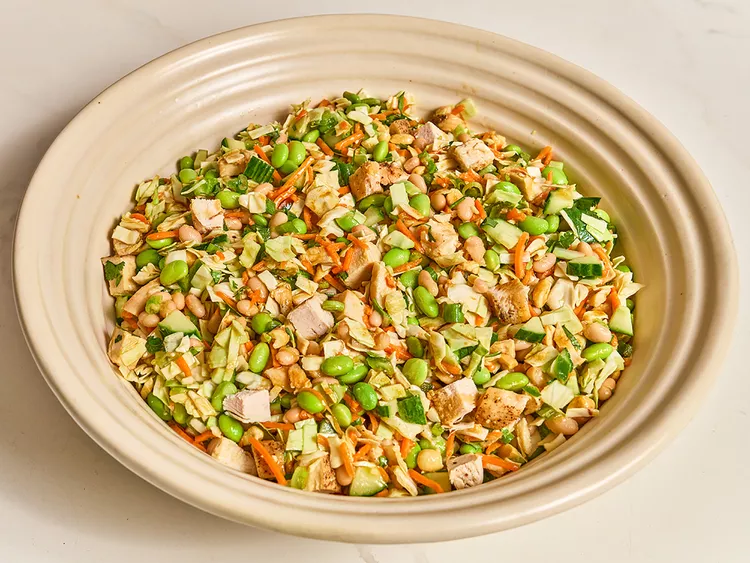

Рецепт один

Этот тайский салат из рубленой курицы и фасоли — это густой, питательный салат из 2 видов фасоли, курицы и овощей с тайской заправкой из имбиря, лайма, арахиса и сои. Крепкий и сытный, это отличный салат, который можно взять с собой на обед или принести на совместный обед.
- 1/2 небольшой зеленой капусты , мелко нарезанной
- 1 английский огурец , очищенный от семян и нарезанный кубиками
- 1/2 пучка кинзы, нарезанной
- 1 пучок зеленого лука , нарезанного
- 1 стакан моркови , нарезанной соломкой
- Смешайте в большой миске капусту, огурец, кинзу, зеленый лук, морковь, халапеньо, эдамаме, фасоль, курицу и арахис.
- Взбейте вместе уксус, сок лайма, имбирь, чеснок, соль, арахисовое масло, соевый соус и мед в миске до однородной массы. Медленно влейте масло, продолжая взбивать, пока смесь не станет однородной. Полейте заправкой капустную смесь и перемешайте, чтобы покрыть ее.
- Подавайте немедленно или поставьте в холодильник до готовности к подаче.